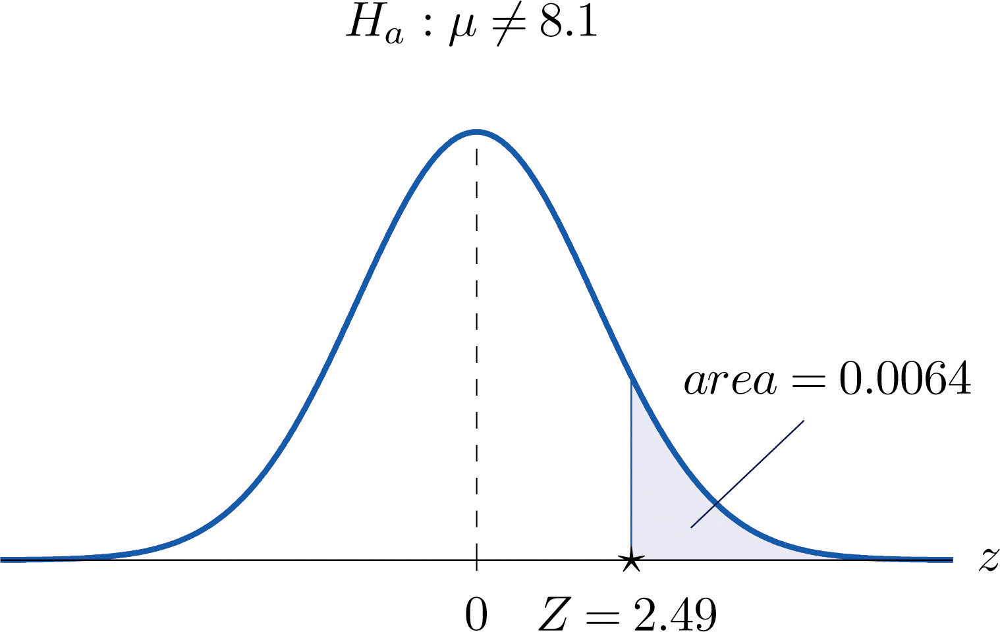
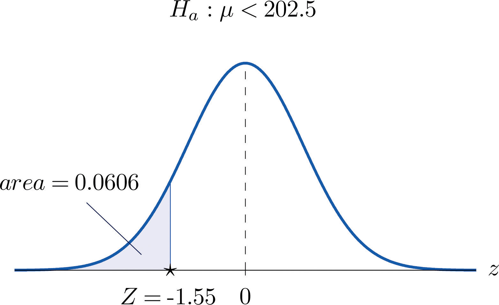

[1] 0.006387155ECON 2B03, Winter 2026
Part C | Lecture 5
Chris Muris, McMaster University
Exercise: same sample, different alpha
Exercise: where is the p-value area?
What a small p-value is telling you
Machine recalibration revisited
R, that means:

Why CVA and PVA agree
NBA total score (SZ 8.3, Example 7)

Beverage preference (SZ 8.5, Example 12)
Poverty rate (adapted from SZ 8.5, Exercise 17)
Exercise: CVA versus PVA
Exercise (adapted from Introductory Statistics): placement exam
Exercise (adapted from OpenIntro): one-sided p-value
Exercise: interpreting a p-value
Exercise: reading a one-proportion test
These slides started from J. S. Racine’s slides for ECON2B03 at McMaster University.
Readings are from
References